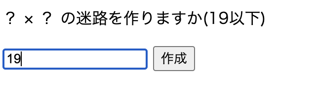
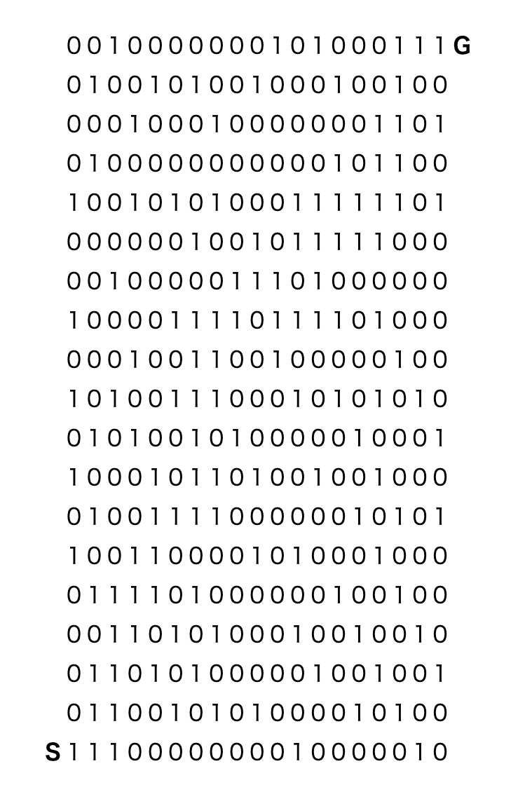

戻る
迷路
【内容】
(入力数値 × 入力数値)マスの迷路を作成する。
0は通れず1が通れる仕様で、左や下に曲がる可能性もある。

【構成】
(入力数値 × 入力数値)の数の分だけ
Mazeインスタンス(①マスの数字、②1つ前の座標、③通過したかのフラグのフィールドを持つ)
を作成し、①に「2」を代入、スタート地点は「1」を代入する。
↓
隣接マスに0か1をランダムに割り当て、1の方に進む。
その際に進むマスの②に現在マスを代入し③を通過したに変更する。
↓
進める先がない(隣接がすべて0もしくは1だけど③が通過した)場合、
②で格納しているマスに戻り③が通過したになっていない1のマスに進む、
を繰り返してゴールまでの道を生成する
【工夫や学び】
0か1をランダムに生成し1が出ることに賭けている仕様なため、
0が多く出ると行く先がなくなってしまう場合がある。
その場合、つまり道を引き返してスタート地点まで戻ってきて
上と右の双方のマスの③が通過したである場合は
失敗とみなして新しく作り直すという仕様になっている。
希望としては上記のようになってしまったら一番進んだ点で、
0と1の再抽選を行いゴールまで繋ぐという仕様にしたかった。
実際にスタート地点まできたら③をリセットというコードを書いたのだが
都度作り直す仕様より遥かに処理が重くなってしまった。
ということがあり都度作り直しを採用し、
20マス以上になると行き止まりになってしまう可能性が増え
都度の場合も処理が重くなってしまったので19マスまでとした。
